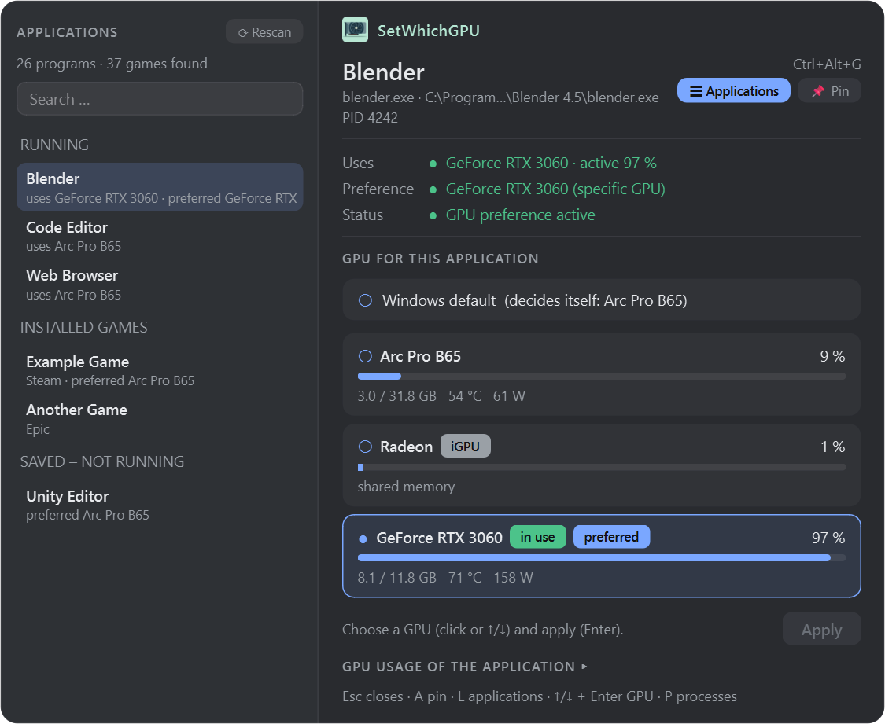
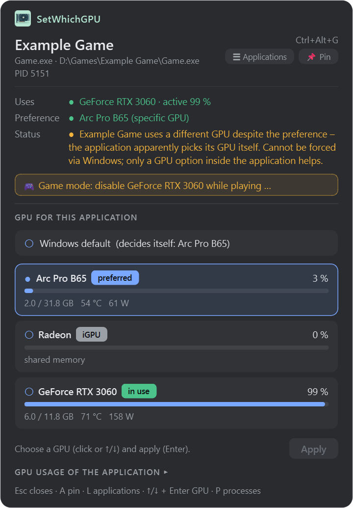

See and set which GPU every Windows app uses
SetWhichGPU is a free, open-source Windows 11 tool for PCs with more than one graphics card. Press Ctrl+Alt+G over any app to see the GPU it really runs on, next to the GPU Windows is told to use – and change it in two clicks.
Version 0.1.0 · Windows 11 · ~19 MB · Release notes & checksum
MIT license · No admin rights · No telemetry · English, Deutsch, Español, Français

“Which GPU is my app actually using?”
Windows can tell an app which graphics card to prefer (Settings → System → Display → Graphics). But it never shows which GPU the app actually ended up on, the setting is buried several clicks deep, and nothing tells you when an app simply ignores it.
On a laptop with integrated and dedicated graphics, or a desktop with an NVIDIA, an Intel Arc and an AMD GPU, that means guessing. SetWhichGPU replaces the guessing with measurements.
Measured vs. preferred – never mixed up
The overlay shows three honest lines: the GPU the app uses (measured from GPU engine activity and video memory), the stored preference, and a status that says whether the preference is active, whether the app needs a restart, or whether the app picks its GPU itself.
Features
Hotkey overlay
Ctrl+Alt+G opens a compact overlay above the active app – borderless fullscreen, several monitors and mixed DPI included.
Per-app GPU selection
Choose Windows default, power saving, high performance or one specific GPU. Essential on PCs with three or more GPUs.
Live GPU monitoring
Load, VRAM, temperature and power per GPU, and the GPU usage of every application, including CUDA compute.
All your apps and games
Running apps, background GPU processes, installed programs and Steam, Epic and GOG games – set the GPU before you start them.
Pin mode
Pin the overlay and it stays visible, following whichever application you switch to.
Safe and reversible
Every change is logged before it is written and can be undone from the tray menu. Per-user settings only, no drivers touched.
How to choose the GPU for an app
- Install and start SetWhichGPU – it lives in the system tray.
- Press Ctrl+Alt+G over the app, or open the Applications list and pick any installed program or game.
- Click the graphics card you want and press Apply.
- Restart the app. The overlay confirms whether it now runs on the chosen GPU.
Windows applies GPU preferences when a program starts, so a running process cannot be moved to another GPU. SetWhichGPU only asks for a restart when it is really needed.

SetWhichGPU vs. Windows Settings
| Windows Settings | SetWhichGPU | |
|---|---|---|
| Set GPU per app | Yes | Yes, one hotkey away |
| Pick one specific GPU | Yes | Yes |
| Shows the GPU the app really uses | No | Yes, measured live |
| Detects apps that ignore the preference | No | Yes |
| Says when a restart is needed | No | Yes |
| Load, VRAM, temperature, power | No | Yes |
| Undo all changes at once | No | Yes |
What it can't do – honestly
- Apps that choose their GPU themselves (many games, Blender Cycles' render device, CUDA and AI tools) ignore the Windows preference. SetWhichGPU tells you so instead of pretending.
- No overlay in exclusive fullscreen; you get a tray notification instead.
- The “specific GPU” option uses the same undocumented format as Windows Settings; a future Windows update could change it.
- Two identical GPUs cannot be told apart by Windows.
- Temperature and power are available for NVIDIA and Intel Arc; AMD telemetry is planned.
Optional game mode
For a game that insists on the wrong GPU, game mode can temporarily disable that GPU while you play and enables it again as soon as the game exits – also after a timeout, from the tray, and on the next start after a crash. It never touches the GPU your monitors are connected to, asks for administrator rights once per session, and is off unless you start it.
Download and install
- Free installer (about 19 MB), installs for your user – no administrator rights.
- Options: start with Windows, desktop shortcut.
- Uninstall via Settings → Apps: SetWhichGPU closes, removes its autostart and asks whether to restore the GPU preferences it changed.
- The installer is not code-signed yet, so Windows SmartScreen may warn: choose More info → Run anyway. The SHA-256 checksum is listed on the release page.
Requires Windows 11 (64-bit). Language follows Windows (English, German, Spanish, French) and can be changed in the tray menu. Developers can also run it from source.
Code signing policy
Windows releases are built from the public source code by GitHub Actions. Code signing: free code signing provided by SignPath.io, certificate by SignPath Foundation (application pending – until then releases are unsigned).
- Committers and reviewers: Mastertoken
- Approvers: Mastertoken
Privacy
This program will not transfer any information to other networked systems unless specifically requested by the user or the person installing or operating it. SetWhichGPU has no telemetry and no update check; its settings and logs stay on your PC. Its only network feature never leaves your PC: while the overlay shows a local AI program (Ollama, LM Studio, KoboldCpp, …), it asks that program on 127.0.0.1 which models are loaded. You can switch this off in the tray menu (“Show loaded AI models”).
Frequently asked questions
How do I make an app use a specific GPU on Windows 11?
Windows stores a graphics preference per program. SetWhichGPU sets it for you: press Ctrl+Alt+G over the app (or pick it from the application list), choose the graphics card and apply. It takes effect the next time the app starts. Besides power saving and high performance you can pick one specific GPU, which matters on PCs with three or more GPUs.
How can I see which GPU a program is actually using?
SetWhichGPU measures the GPU engines and video memory each process uses (Windows performance counters, plus NVML for NVIDIA and IGCL for Intel Arc) and shows the measured GPU next to the stored preference, with load, VRAM, temperature and power per GPU.
Why does my game ignore the Windows GPU preference?
Some applications enumerate all GPUs and choose one themselves, for example many games, Blender Cycles and CUDA or AI tools. Windows cannot override that. SetWhichGPU detects and reports it instead of showing a misleading success. For games it offers an optional game mode that temporarily disables the unwanted GPU while you play and enables it again afterwards.
Does SetWhichGPU need administrator rights or change drivers?
No. It only writes the per-user graphics preference that Windows Settings also uses, logs every change first and can undo all changes from the tray menu. It never modifies drivers, never injects into other processes and sends no telemetry. Only the optional game mode asks for administrator rights, once, to disable and re-enable a device.
Does it work on laptops with integrated and dedicated graphics?
Yes, it works with any GPUs Windows exposes as separate adapters: integrated plus dedicated graphics in laptops, desktops with several graphics cards, NVIDIA, AMD and Intel Arc. Two identical GPUs of the same model cannot be told apart by Windows, so selection is disabled in that case.
Can I see which GPU my local AI model (Ollama, LM Studio, ComfyUI) runs on?
Yes. SetWhichGPU measures the GPU load and video memory of every process, including CUDA compute, so you see on which graphics card Ollama, LM Studio or ComfyUI is working and how a large model is split across several GPUs. For Ollama, LM Studio, Lemonade, KoboldCpp, llama.cpp, Stable Diffusion WebUI (A1111, Forge, SD.Next) and text-generation-webui it also shows which models are loaded, next to the measured GPU – asked on your own PC only. These tools pick their GPU themselves; choose the GPU in the tool, for example with CUDA_VISIBLE_DEVICES.
Is SetWhichGPU free?
Yes. SetWhichGPU is free and open source under the MIT license. The source code is on GitHub.